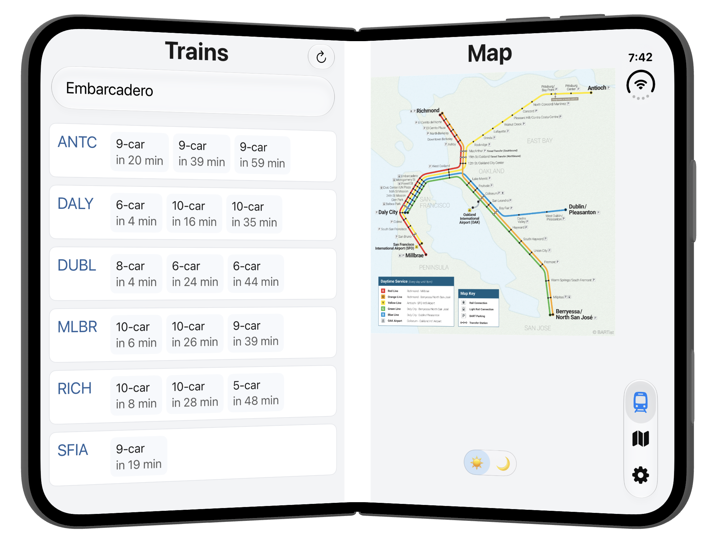
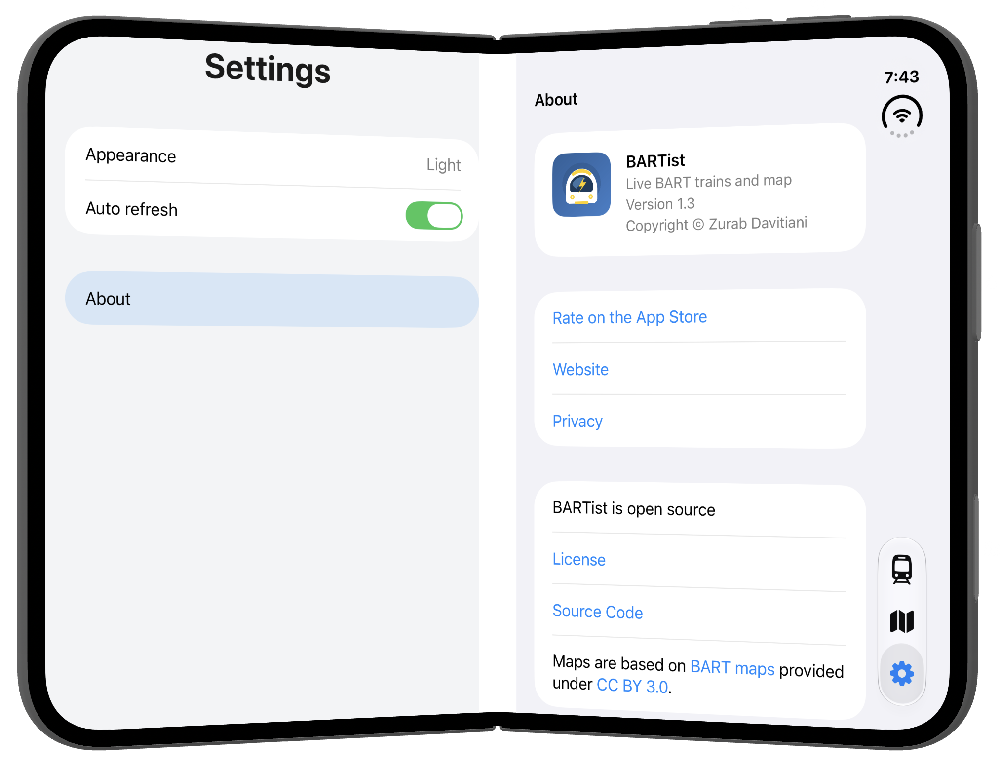

iPhone Duo, version 1.3
BARTist version 1.3 is seeing double because it now supports iPhone Duo!

In open or book pose, trains and system map sit side by side:

The map tab can now use the entire screen:
Settings are also split naturally:

Of course, the iPhone Duo fully supports the dark mode.
iPhone Duo in folded pose along with other iPhones has the same UX as before.
No ads, accounts, subscriptions, tracking, or analytics. It's open source and the code is on GitHub. Enjoy!